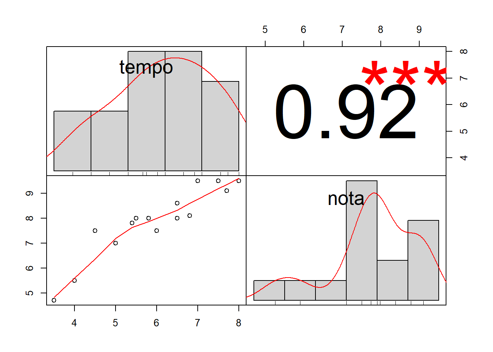

Capítulo 5 Modelos de Regressão
Iara Denise Endruweit Battisti
Erikson Kaszubowski
Felipe Micail da Silva Smolski
Muitas vezes, há a necessidade de estudar duas ou mais variáveis ao mesmo tempo com o objetivo de predizer uma variável em função da(s) outra(s). Por exemplo, verificar se sólidos removidos de um material se relaciona com o tempo de secagem e qual é a forma dessa relação. Outros exemplos: relação entre tempo de estudo e desempenho a uma avaliação; relação entre investimento em comunicação e vendas; entre outros.
A análise de correlação permite quantificar a relação linear entre duas variáveis quantitativas. Os modelos de regressão permitem demonstrar a forma da relação entre duas ou mais variáveis. Neste capítulo, serão estudados os modelos de regressão linear na qual a variáveis resposta (\(Y\)) é quantitativa e as variáveis preditoras (\(X_i\)) são quantitativas ou qualitativas.
5.1 Correlação linear
A correlação linear é a técnica mais simples para estudar a relação entre duas variáveis. Os dados compõem uma única amostra de pares de valores (\(x_i, y_i\)), correspondendo aos valores das variáveis X e Y, respectivamente, mensurados em cada elemento de uma amostra ou uma população. Para analisar a existência de relação entre as duas variáveis de forma exploratória, primeiramente pode-se fazer o Diagrama de Dispersão.
5.2 Diagrama de dispersão
O diagrama de dispersão é um gráfico para verificar a existência de relação entre os par de variáveis X e Y. É composto por pontos, os quais correspondem aos pares de valores (\(xi, y_i\)), sendo a variável X representada no eixo horizontal e a variável Y representada no eixo vertical.
O diagrama de dispersão fornece uma visualização gráfica do comportamento conjunto das duas variáveis em estudo. Na Figura 5.1a, percebe-se uma correlação (relação) linear positiva entre as variáveis X e Y, ou seja, os valores das duas variáveis crescem conjuntamente. Na Figura 5.1b, percebe-se uma correlação linear negativa entre as variáveis X e Y, neste caso, os valores de uma variável crescem enquanto os valores da outra variável decrescem. A Figura 5.1c informa a ausência de relação entre as duas variáveis e, a Figura 5.1d mostra uma relação não linear, que não será abordada neste capítulo.

Figura 5.1: Diagramas de Dispersão
Fonte: Elaborado pelo(s) autor(es).
Exemplo: Suponha que 15 alunos foram selecionados aleatoriamente na turma de Estatística, sendo registrado o tempo de estudo e nota da atividade avaliativa. O objetivo da pesquisa é verificar se existe relação entre tempo de estudo e nota.
| Tempo | 4,0 | 6,0 | 5,5 | 5,0 | 6,8 | 6,5 | 3,5 | 4,5 | 7,5 | 8,0 | 5,4 | 6,5 | 7,7 | 7,5 | 5,8 |
|---|---|---|---|---|---|---|---|---|---|---|---|---|---|---|---|
| Nota | 5,5 | 7,5 | 8,0 | 7,0 | 8,1 | 8,6 | 4,7 | 7,5 | 9,5 | 9,5 | 7,8 | 8,0 | 9,1 | 9,5 | 8,0 |
Fonte: Dados simulados.
Primeiramente, deve-se digitar os dados para cada variável diretamente na linha de comando ou em um arquivo de dados que será importado. No caso de linha de comando:
tempo=c(4,6,5.5,5,6.8,6.5,3.5,4.5,7,8,5.4,6.5,7.7,7.5,5.8)
nota=c(5.5,7.5,8,7,8.1,8.6,4.7,7.5,9.5,9.5,7.8,8,9.1,9.5,8)Para elaborar o diagrama de dispersão o compando utilizado é o plot em que x corresponde ao vetor de dados da variável resposta e y corresponde ao vetor de dados da variável preditora.
plot(variável_preditora, variável_dependente
Para o exemplo o comando é o seguinte:
plot(tempo,nota)Figura 5.2: Diagrama de dispersão da nota em relação ao tempo de estudo dos participantes do estudo
Fonte: Elaborado pelo(s) autor(es).
Resultando no diagrama de dispersão apresentado na Figura 5.2.
5.3 Coeficiente de Correlação Linear de Pearson
O coeficiente de correlação linear de Pearson (Karl Pearson 1857-1936) mede o grau de relacionamento linear entre os valores pareados \(x_i\) e \(y_i\) em uma amostra. O coeficiente linear de Pearson é obtido da seguinte forma:
\[ r = \frac{\sum_{i=1}^{n} (x_i - \overline{x})(y_i - \overline{y})} {\sqrt{\sum_{i=1}^{n} (x_i - \overline{x})^2(y_i - \overline{y})^2}} \]
em que:
- \(n\): número de pares na amostra;
- \(x\): valores da variável x;
- \(y\): valores da variável y;
- \(\bar{x}\): média dos valores de x;
- \(\bar{y}\): média dos valores de y;
O coeficiente de correlação linear (r) é uma estatística amostral, representando a magnitude da relação entre duas variáveis na amostra. O parâmetro populacional é representado por \(\rho\), que é calculado da mesma forma. O coeficiente de correlação linear assume valores entre -1 e +1, inclusive. Se o valor de r está próximo de 0, conclui-se que não há correlação linear entre as variáveis X e Y. Se o valor de r está próximo de -1 ou +1, conclui-se pela existência de correlação linear significativa entre as variáveis X e Y, sendo que o sinal indica uma relação linear positiva (direta) ou negativa (inversa).
Sintaxe no software R:
cor(variável_preditora,variável_dependente) ou cor(x,y)
Obs: x e y são numéricos.
cor(tempo,nota)[1] 0.9224No resultado é apresentado o valor do coeficiente de correlação linear, que neste caso, está próximo de +1, expressando uma relação forte e direta. Ainda, é possível aprimorar a exibição dos resultados sobre o coeficiente de correlação com as variáveis observadas com o pacote PerformanceAnalytics, que além do coeficientes de correlação, mostra a distribuição das variáveis e o gráfico de dispersão:
library("PerformanceAnalytics")
chart.Correlation(cbind(tempo,nota), histogram=TRUE, pch=19)
5.4 Modelo de Regressão
No estudo de regressão estabelece-se aos casos em que se pretende estabelecer uma relação entre uma variável Y considerada dependente (variável resposta ou desfecho) e uma ou mais variáveis \(x_1, x_2,\cdots, x_k\) (variáveis explicativas ou preditoras) consideradas independentes.
O objetivo da análise de regressão é ajustar uma equação que permita explicar o comportamento da variável resposta de maneira que o valor previsto possa estar próximo do que seria observado, dado um conjunto de valores observados para as variáveis preditoras. A forma do modelo de regressão depende da relação entre as variáveis, expressa visualmente pelo diagrama de dispersão, conforme exemplificado na Figura 5.1.
A análise de regressão é uma técnica muito utilizada em variáveis quantitativas, como por exemplo:
Vendas em função do investimento em comunicação;
Altura de crianças em função da idade;
Nota obtida em função de horas de estudo;
Produtividade de uma cultura em relação a quantidade de adubação.
Na Figura 5.3 é apresentada a variação explicada e não explicada na análise por modelo regressão.

Figura 5.3: Variação explicada e não explicada na análise de regressão
Fonte: Elaborado pelo(s) autor(es).
Observa-se na Figura 5.3, uma identidade na regressão, conforme a seguinte expressão:
\[ \begin{matrix} \sum (y_i-\overline{y}) ^{2} = \sum (\hat{y}_i-\overline{y})^2 + \sum (y_i-\hat{y}_i)^2 \\ \\ \text{Soma de Quadrado Total = Soma de Quadrado de Regressão + Soma de Quadrado de Resíduo} \end{matrix} \]
Assim, a partir da expressão apresentada e buscando maximizar a variância explicada, o modelo de regressão mais adequado será aquele com maior proporção de “Soma de Quadrado de Regressão” em relação à “Soma de Quadrado Total”, minimizando a “Soma de Quadrado do Resíduo.”
5.5 Modelo de Regressão Linear Simples
O modelo de regressão linear simples é usado quando a resposta da variável dependente se expressa de forma linear (Figura 5.3 e neste caso com apenas uma variável explicativa, expresso da seguinte maneira (Hoffmann e Vieira 1998):
\[ y_i=\beta_0+\beta_1x_i+\varepsilon _i \]
Em que:
\(y_i\): valores da variável resposta (dependente, desfecho), \(i = 1,2,...,n\) observações;
\(x_i\): valores da variável explicativa (independente, preditora), \(i = 1,2,...,n\) observações;
\(\beta_0\): coeficiente linear (intercepto). Interpretado como o valor da variável dependente quando a variável independente é igual a 0;
\(\beta_1\): coeficiente angular (inclinação). Interpretado como acréscimo/decréscimo na variável dependente para a variação de uma unidade na variável independente;
\(\varepsilon_i\): erros aleatórios costumeiramente assumidos como provenientes de uma população normal, com média 0 e variância constante \(\begin{bmatrix}\varepsilon_i N(0, \sigma^2)\end{bmatrix}\).
5.6 Método dos Mínimos Quadrados
O método dos mínimos quadrados (MMQ) é utilizado para a obtenção dos coeficientes linear e angular. Consiste em minimizar a Soma de Quadrados de Resíduos, ou seja, minimizar:
\[ \sum (y_i-\hat y_i)^2=\sum (y_i-b_0-b_1x_i^2) \]
As expressões para os coeficientes, que minimizam a Soma de Quadrado dos Resíduos são obtidas pela derivada desta soma de quadrados em relação a \(b_0\) e em relação a \(b_1\) e podem ser descritas por (Hoffmann e Vieira 1998):
\[ b_1=\frac{\sum xy-\frac{\sum x \sum y}{n}}{\sum x^2 - \frac{(\sum x)^2}{n}} \]
em que:
\(n\): número de pares na amostra;
\(x\): valores da variável x;
\(y\): valores da variável y.
e
\[ b_0=\bar{y}-b_1\bar{x} \]
em que:
\(\bar{x}\): média dos valores de x;
\(\bar{y}\): média dos valores de y;
\(b_1\): valor calculado do coeficiente angular.
Obtendo-se a seguinte equação de regressão linear simples estimada:
\[ \hat{y}=b_0-b_1{x} \]
em que:
\(b_0\): coeficiente linear estimado;
\(b_1\): coeficiente angular estimado;
\(x\): valores da variável explicativa.
Esta equação refere-se a reta de regressão, sendo que se \(b_1\) é um valor positivo a reta é crescente, demonstrando uma relação positiva entre as variáveis; mas se \(b_1\) é um valor negativo, a reta é decrescente, demonstrando uma relação inversa entre as variáveis.
No software utiliza-se o comando lm para executar a análise de regressão linear, em que y corresponde aos valores numéricos da variável resposta e x são valores numéricos da variável preditora. No caso do segundo comando, “base” corresponde ao nome da base de dados em que estão armazenadas as variáveis. Lembrando que “regressao” é o nome fornecido pelo usuário.
nome_para_regressao=lm(variável_dependente~variável_preditora)
Por exemplo:
regressaolinear=lm(nota~tempo)
regressaolinear
Call:
lm(formula = nota ~ tempo)
Coefficients:
(Intercept) tempo
2.221 0.947 No resultado observa-se o valor do coeficiente linear (intercept) igual a 2,2214 e o valor do coeficiente angular (tempo).
5.7 Análise de Variância
A análise de variância, técnica introduzida por Fisher, na década de 20, testa o ajuste da equação como um todo, ou seja, um teste para verificar se a equação de regressão obtida pode ser exclusivamente fruto do erro amostral em uma situação em que a variável preditiva não possui nenhuma relação linear com o desfecho (isto é, testar a significância da equação ajustada). No caso de regressão linear simples, a análise de variância é definida como apresentada na Tabela 5.2.
As hipóteses testadas na análise de variância da Regressão são:
\[ H_0:\beta_1=0 \textrm{ (a regressão não é significativa)} \]
\[ H_1:\beta_1 \neq 0 \textrm{ (a regressão é significativa)} \]
| FV | GL | SQ | QM | F |
|---|---|---|---|---|
| Regressão | 1 | SQRegressão | QMRegressão | Fc |
| Desvios | n-2 | SQResíduos | QMResíduos | - |
| Total | n-1 | SQTotal | - | - |
Fonte: Elaborado pelo(s) autor(es).
em que:
\[ SQ \textrm{Regressão} = \frac{(\sum xy - \frac{(\sum x \sum y)^2}{n})}{\sum x^2 - \frac{(\sum x)^2}{n}} \]
\[ SQ \textrm{Total} = \sum y^2 - \frac{(\sum y)^2}{n} \]
SQResíduo = SQTotal - SQRegressão
QMRegressão = SQRegressão \(/\) GLRegressão
QMResíduo = SQResíduo \(/\) GLResíduo
Fc = QMRegressão \(/\) QMResíduo
Espera-se que o QMResíduo seja mínimo, assim o modelo de regressão estará bem ajustado.
A distribuição de probabilidade para a razão de duas variâncias é conhecida como a distribuição F. Se a hipótese nula for rejeitada ao nível de signicância \(\alpha\), rejeita-se \(H_0\) e portanto a regressão é significativa ao nível \(\alpha\) de significância.
No software R, utiliza-se a função anova() para obter a análise de variância informando o nome dado ao modelo de regressão, obtido anteriormente.
anova(nome_para_regressão)
Por exemplo:
anova(regressaolinear)Analysis of Variance Table
Response: nota
Df Sum Sq Mean Sq F value Pr(>F)
tempo 1 22.8 22.82 74.2 9.9e-07 ***
Residuals 13 4.0 0.31
---
Signif. codes: 0 '***' 0.001 '**' 0.01 '*' 0.05 '.' 0.1 ' ' 1No resultado observa-se as fontes de variação: tempo (variável preditora) e resíduos (residuals); graus de liberdade (Df), soma de quadrado (Sum Sq), quadrado médio (Mean Sq), valor do F calculado (F value) e o valor \(p\) (Pr). Neste caso, como \(p<0,01\) rejeita-se \(H_0\) e, portanto a equação é significativa (\(p<0,01\)).
5.8 Coeficiente de Determinação
O coeficiente de determinação representa o percentual de variação total que é explicada pela equação de regressão, sendo obtido da seguinte forma:
\[ R^2 = \frac{\textrm{SQRegressão}}{SQTotal} \]
Quanto mais próximo de 1 (ou 100%) for o R\(^2\), melhor será o ajuste da equação de regressão. Também utiliza-se o coeficiente de determinação ajustado (R\(^2\) ajustado), o qual considera o número de variáveis e o tamanho da amostra, sendo que este é o mais indicado para regressão múltipla.
No software R, o valor do coeficiente de determinação é obtido pelo comando summary(), conforme segue:
summary(nome_para_regressao)
Por exemplo:
summary(regressaolinear)
Call:
lm(formula = nota ~ tempo)
Residuals:
Min 1Q Median 3Q Max
-0.8372 -0.4109 0.0418 0.3733 1.0154
Coefficients:
Estimate Std. Error t value Pr(>|t|)
(Intercept) 2.221 0.673 3.30 0.0057 **
tempo 0.947 0.110 8.61 9.9e-07 ***
---
Signif. codes: 0 '***' 0.001 '**' 0.01 '*' 0.05 '.' 0.1 ' ' 1
Residual standard error: 0.555 on 13 degrees of freedom
Multiple R-squared: 0.851, Adjusted R-squared: 0.839
F-statistic: 74.2 on 1 and 13 DF, p-value: 9.88e-07No resultado, observa-se o valor de coeficiente de determinação (multiple R-squared) igual a 0,8509, indicando que 85,09% da variação da nota (variável resposta) é devido a variação do tempo de estudo (variável preditora).
A reta de regressão pode ser visualizada no diagrama de dispersão com o comando abline(), como segue:
abline(nome_para_regressao)
Para o exemplo:
plot(nota~tempo)
abline(coef(regressaolinear))Figura 5.4: Reta de regressão ajustada da nota em relação ao tempo de estudo dos participantes da pesquisa
Fonte: Elaborado pelo(s) autor(es).
O intervalo de 95% de confiança para os coeficientes de regressão são obtidos, no software R, pelo comando confint(), da seguinte forma:
confint(nome_para_regressao)
Para o exemplo:
confint(regressaolinear) 2.5 % 97.5 %
(Intercept) 0.7671 3.676
tempo 0.7097 1.1855.9 Análise dos Resíduos
O resíduo da análise de regressão é a diferença do valor do Y observado e Y estimado referente a cada par de valores do conjunto de dados, isto é, \(E_i = Y_i-\hat{Y}_i\).
No software R, pode-se utilizar o comando “residuals”, para visualizar os resíduos, lembrando que “regressaolinear” é o nome dado ao modelo executado, como segue:
residuals(regressaolinear)
A análise dos resíduos é importante para a validade dos intervalos de confiança e testes de hipóteses, uma vez que as suposições das observações de Y independentes e o erro adere a distribuição aproximadamente normal com média 0 e variância constante devem ser satisfeitas.
O método gráfico pode ser utilizado para testar estas suposições dispondo os valores da variável preditora no eixo x e os respectivos valores dos resíduos no eixo y. Ainda, pode-se dispor os valores ajustados no eixo x e os respectivos valores dos resíduos do eixo y.
Se o modelo ajustado for apropriado para os dados, os pontos devem estar distribuídos de forma aleatória no gráfico dos resíduos, conforme Figura 5.5a. Caso a suposição não seja satisfeita, métodos alternativos podem ser utilizados como: método dos mínimos quadrados ponderados para o caso de não homocedasticidade; o método dos mínimos quadrados generalizados para o caso de erros correlacionados; e, métodos não-paramétricos para o caso de não normalidade.
Além da análise gráfica, existem testes para avaliar a homocedasticidade como o Teste de Bartlett e para avaliar a normalidade aplicam-se os testes de Shapiro Wilks ou Kolmogorov-Smirnov.

Figura 5.5: Gráficos para análise de resíduos em regressão
Fonte: Elaborado pelo(s) autor(es).
A seguir é apresentado o gráfico de resíduos apresentando os valores ajustados pela equação de regressão e os resuíduos:
plot(fitted(nome_para_regressao),residuals(nome_para_regressao),
xlab="Valores ajustados",ylab="Resíduos")
Nesta sintaxe, o termo “regressaolinear” é o nome dado ao modelo de regressão, “fitted” define os valores ajustados no eixo horizontal, “residuals” define os resíduosno eixo vertical, “xlab” indica o nome do eixo horizontal e “ylab” indica o nome do eixo vertical. e “abline(h=0)” apresentauma linha constante em y=0 para facilitar os desvios dos resíduos.
Na Figura 5.6 é apresentado o gráfico de resíduo, no qual os resíduos são apresentados no eixo y e os valores ajustados são apresentados no eixo x.
plot(fitted(regressaolinear), residuals(regressaolinear),
xlab="Valores ajustados", ylab="Residuos")
abline(h=0)Figura 5.6: Gráfico dos resíduos em relação aos valores ajustados para os dados do exemplo
Fonte: Elaborado pelo(s) autor(es).
Outro gráfico de resíduos que é possível elaborar na análise de resíduos representa a variável preditora (x) no eixo x e o resíduos no eixo Y.
Sintaxe no software R:
plot(tempo,residuals(nome_para_regressao),
xlab="Valores independente", ylab="Resíduos")
Obs: regressao é o nome dado ao modelo de regressão; a variável x define os valores do eixo x e residuals define os valores ajustados no eixo Y; xlab indica o nome do eixo x e ylab indica o nome do eixo y.
abline(h=0)
Obs: adicionar uma linha constante em y=0.
Por exemplo:
plot(tempo, residuals(regressaolinear),
xlab = "Valores independentes",
ylab="Residuos")
abline(h=0)Figura 5.7: Gráfico gerado pelo RStudio para análise dos resíduos com os valores da variável independente
Fonte: Elaborado pelo(s) autor(es).
Na Figura 5.7 é apresentado o gráfico de resíduo, em que no eixo y constam os valores dos resíduos e no eixo x constam os valores da variável independente.
Considerando os dados do exemplo, suponha que um aluno estudou 6,5 horas (x=6,5), então o valor ajustado da nota (y ) é dado por 2,2214+0,9474*6,5, resultando em 8,38. Para esse caso, o resíduo é:
Yobservado – Yestimado = 8 – 8,38 = - 0,38
Para exibir os valores ajustados e os resíduos da equação de regressão utilizam-se os seguintes comandos:
residuals(regressaolinear) (exibe os resíduos do modelo regressao).
fitted(regressaolinear) (exibe os valores ajustados do modelo regressao).
Para testar a suposição que os erros aleatórios têm distribuição normal, pode-se elaborar o gráfico de probabilidade normal, conforme segue:
qqnorm(residuals(nome_para_regressao))
qqnorm(residuals(regressaolinear))
Figura 5.8: Gráfico de probabilidade normal para verificar normalidade dos resíduos
Fonte: Elaborado pelo(s) autor(es).
Ainda, pode-se construir o gráfico com a distribuição da probabilidade dos resíduos, através de um histograma, verificando assim se a cauda é simétrica ou não:
hist(x = regressaolinear$residuals,
xlab = "Resíduos",
ylab = "Densidade",
main = "",
col = "lightgreen",
probability = TRUE)
lines(density(regressaolinear$residuals))
Figura 5.9: Histograma de distribuição da probabilidade para os resíduos
Fonte: Elaborado pelo(s) autor(es).
Também, pode-se aplicar o teste de normalidade de Shapiro-Wilk para verificar a normalidade dos dados, confirmando a simetria ou não da cauda do gráfico acima. O comando utilizado é o seguinte:
shapiro.test(residuals(nome_para_regressao))
Por exemplo:
shapiro.test(residuals(regressaolinear))
Shapiro-Wilk normality test
data: residuals(regressaolinear)
W = 0.96, p-value = 0.65.9.1 Valores outliers na regressão
Para análise dos valores outliers nos resíduos (residuals standard e residuals studentized), utilizam-se os seguintes comandos:
rstudent(nome_para_regressao)
rstandard(nome_para_regressao)
rstudent(regressaolinear) 1 2 3 4 5 6 7 8
-1.04742 -0.74389 1.07142 0.07646 -1.07311 0.40066 -2.01860 2.29138
9 10 11 12 13 14 15
1.26283 -0.60069 0.86125 -0.69777 -0.81958 0.32859 0.51493 rstandard(regressaolinear) 1 2 3 4 5 6 7 8
-1.04353 -0.75701 1.06538 0.07956 -1.06691 0.41426 -1.81531 1.98916
9 10 11 12 13 14 15
1.23490 -0.61602 0.86993 -0.71196 -0.83013 0.34048 0.53013 E o gráfico para verificar valores outliers nos resíduos:
plot(rstudent(nome_para_regressao))
plot(rstandard(nome_para_regressao))
Os gráficos dos resíduos padronizados (standard) e studentizados (student) estão apresentados nas Figuras 5.10 e 5.11, respectivamente.
Para o exemplo:
plot(rstandard(regressaolinear))
abline(h=2,col="red")
abline(h=-2,col="red")Figura 5.10: Resíduos padronizados para o exemplo
Fonte: Elaborado pelo(s) autor(es).
Aqueles valores fora do intervalo (-2, +2) são possíveis outliers.
plot(rstudent(regressaolinear))
abline(h=2,col="red")
abline(h=-2,col="red")Figura 5.11: Resíduos studentizados para o exemplo
Fonte: Elaborado pelo(s) autor(es).
5.9.2 Valores influentes na regressão
Para análise dos valores influentes, utiliza-se:
dffits(nome_para_regressao)
Para esse exemplo:
dffits(regressaolinear) 1 2 3 4 5 6 7 8
-0.55767 -0.19884 0.30669 0.02611 -0.34386 0.11597 -1.34854 0.97320
9 10 11 12 13 14 15
0.43848 -0.32566 0.25379 -0.20196 -0.38792 0.14210 0.13902 Aqueles valores maiores que \(2*(p/n)^{(1/2)}\) são possíveis pontos influentes. Em que, p = número de parâmetros do modelo e n = tamanho da amostra.
Para esse exemplo:
2*(2/15)^(1/2)[1] 0.7303O gráfico para detectar pontos influentes pode ser elaborado pelo comando (o gráfico está apresentado na Figura 5.12:
plot(dffits(regressaolinear))
abline(h=-0.73,col="red")
abline(h=0.73,col="red")Figura 5.12: Pontos influentes para o exemplo
Fonte: Elaborado pelo(s) autor(es).
O comando plot(nome_para_regressao) elabora diferentes gráficos para o diagnóstico do modelo.
5.10 Intervalo de Predição
Após o ajuste da equação de regressão linear simples, verificada a significância da equação (p \(<\) 0,05) e verificada que a equação estimada se ajusta bem aos dados pelo valor do coeficiente de determinação então é possível predizer valores da variável Y (resposta) a partir de valores da variável X (explicativa). Caso a regressão não seja significativa a melhor predição para a variável Y é média dos valores de \(y\), ou seja, \(\hat{y}\).
A predição de valores só tem sentido nos seguintes casos:
- regressão significativa;
- os valores de X devem estar dentro dos limites inferior e superior dos dados amostrais;
- as inferências referem-se somente a população de onde a amostra aleatória foi extraída;
- as suposições sobre os resíduos devem ser satisfeitas.
Quando tem-se um equação estimada do tipo \(\hat{y} = b_0 + b_1x\), \(\hat{y}\) representa o valor predito da variável Y para um dado valor da variável X, ou seja, é uma predição pontual, porém esta não informa a sua precisão, a qual é contemplada no intervalo de predição (da mesma forma do intervalo de confiança, já visto em inferência estatística).
O intervalo de predição para um determinado Y é dado por:
\[ \hat{y}\pm \varepsilon \]
em que:
\[ \varepsilon = t_{(n-2;\frac{a}{2})}.S_e. \sqrt{ 1+ \frac{1}{n} + \frac{n(x_p-\bar{x})^2}{n(\sum x^2)-(\sum x)^2} } \]
onde:
\(x_p\): o valor dado para x
\(S_e\): o erro padrão da estimativa, definido por:
\[ S_e=\sqrt {\textrm{QMResíduo}}=\sqrt\frac{\sum(y-\hat{y})^2}{n-2} \]
Assim, obtêm-se o intervalo de predição para um determinado Y, que também pode ser expresso da seguinte forma:
\[ (\hat{y} - \varepsilon; \hat{y} + \varepsilon) \]
Sintaxe no software R:
x0=data.frame(x=valor_numérico)
Obs: x0 recebe o valor de x.
predict(regressao,x0,interval="prediction")
Obs: regressao é o nome dado ao modelo de regressão.
Para o exemplo R:
x0=data.frame(tempo=5.5)
predict(regressaolinear, x0, interval="prediction") fit lwr upr
1 7.432 6.189 8.6755.11 Exercícios
1. No site do livro (https://smolski.github.io/softwarelivrer/livro.html) está disponível uma planilha de dados com o nome “peixes1”, na primeira coluna consta a quantidade de ovos (m\(^3\)) e na segunda coluna consta a quantidade de oxigênio no rio. O objetivo da pesquisa é comparar alguns ambientes do rio sobre a desova e o crescimento das larvas de peixes. Analisar a relação da quantidade de ovos com a quantidade de oxigênio no rio. Para isso utilize coeficiente de correlação linear e regressão linear simples.
2. Baixe no site https://www.openintro.org/stat/data/?data=gun_violence_us a base de dados gun_violence_us.csv (GUN VIOLENCE IN THE UNITED STATES), apresentando o relacionamento entre propriedade de armas e violência nos Estados Unidos. A variável dependente é a taxa de propriedade de armas (ownership_rate: percentual de adultosem cada estado que é proprietário de uma arma em 2013) e a variável independente é a taxa de mortalidade (mortality_rate: número de mortes por 100.000 em cada estado em 2014).
2.1 Faça um diagrama de dispersão para visualizar a relação da taxa e ano. O que você pode concluir?
2.2 Calcule o coeficiente de correlação linear. Conclua sobre ele.
2.3 Encontre e interprete a equação ajustada.
2.4 Apresente e interprete o coeficiente de determinação (R\(^2\)).
2.5 Teste a significância da equação de regressão através da ANOVA.
2.6 Faça o intervalo de predição para x=0.50.
2.7 Trace a reta de regressão ajustada no diagrama de dispersão.
2.8 Faça análise de resíduos.
Referências
Hoffmann, Rodolfo, e Sônia Vieira. 1998. Análise de regressão: uma introdução à econometria. 2 ed. São Paulo: Hucitec.